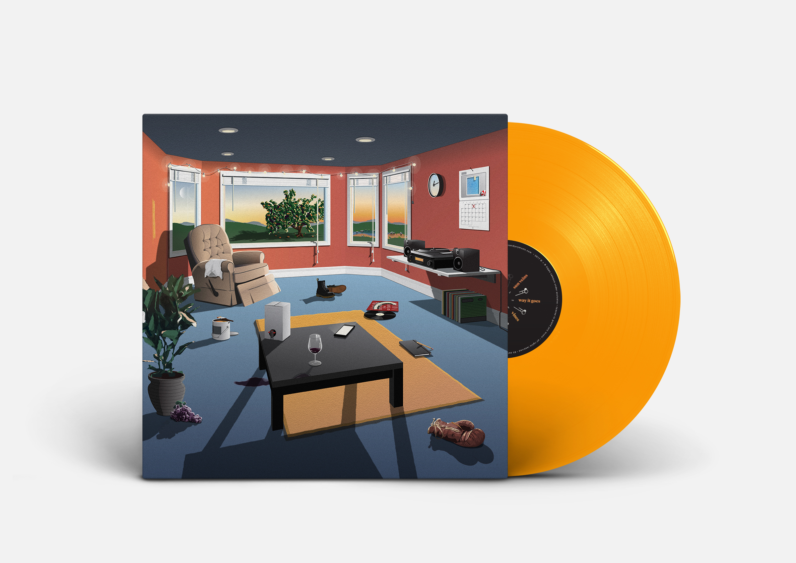
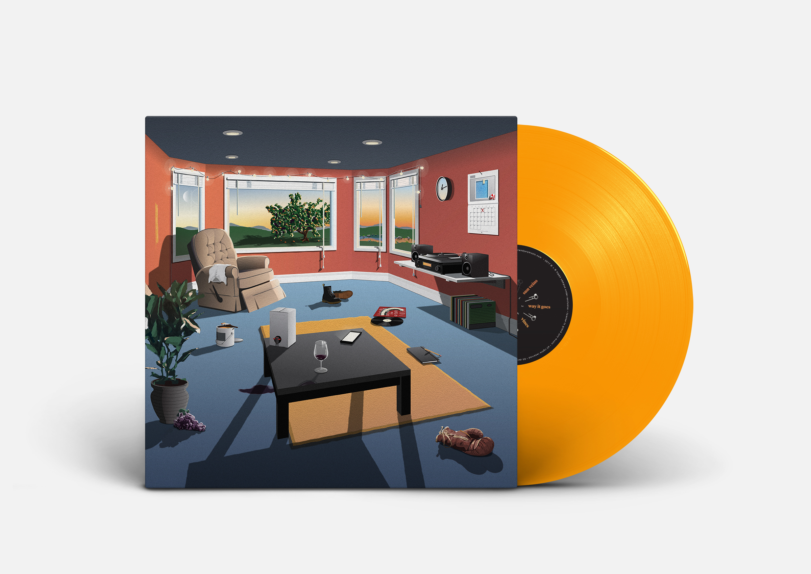

About

Hello! My name is David Caswell Kramer.
You can call me David for short, or Dave for extra short.
This website is currently under construction. If you want to know when it is complete, follow me on Twitter, Instagram, or Tumblr. For all work inquiries, feel free to send me an email at dkramer@mica.edu. I am currently in my last semester at Maryland Institute College of Art working on my thesis, so my availability is limited.
Work Experience
NR2154 Graphic Design Intern New York, NY May 2016 - August 2016
Cina Associates Graphic Design Intern Minneapolis, MN June 2015 - August 2015
Hippo Campus Art Director, Designer Baltimore, MD 2013 - Present
Freelance Graphic Designer Baltimore, MD 2013 - Present
Download my full resume here.Work Samples
 
